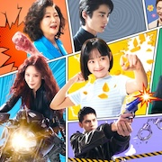

Fantasy K-dramas often contain themes of magic or supernatural powers. While many are simply only action, the following shows also include rom-com aspects as well!
|  | ||
| My Demon | Alchemy of Souls | Strong Girl Nam-soon |
| "My Demon" centers on a cold and arrogant chaebol heiress, Do Do-hee, who enters a contract marriage with a powerful demon, Jeong Gu-won, who has temporarily lost his powers. | The story revolves around a powerful assassin, Nak-su, whose soul is accidentally trapped in a weaker, less powerful body belonging to Mu-deok. Nak-su is now forced to adjust in her new body and its limitations. | "Strong Girl Nam-soon" centers on Kang Nam-soon, a young woman with superhuman strength, who returns to South Korea from Mongolia to find her birth family. |